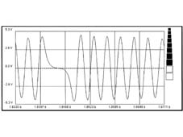

5510CF RPM SIGNAL CHECK
- Path
- Test > 55 ELECTRICAL EQUIPMENT > 5510 ENGINE IGNITION > 5510CF RPM SIGNAL CHECK
- Kind
- test / check procedure
- Applies to
- engines: 1.6 16v; all production periods; only with equipment: BIPOWER
- Interactive page
- https://sloeber94.github.io/elrnDB-fMltpl/en/#/186003503
Applies to: engines: 1.6 16v; all production periods; only with equipment: BIPOWER
- Prepare the diagnostic equipment for a voltage graph assimilation.
- Select the "VOLTMETER" function from the "INSTRUMENT" menu with the time set at 5 seconds.
- Disconnect the connector for the control unit side sensor wiring and leave it disconnected.
- Connect the sensor side connector to isolator AD 233 N° 180.63.87.000.
- Connect it to the probes between pins 1 and 2 of the isolator.
- Press the START button on the diagnostic equipment to begin creating a graph assimilation.
- Let the engine run for at least 5 seconds and check that the amplitude signal is more than 1.5 V and conforms as in the graph.
